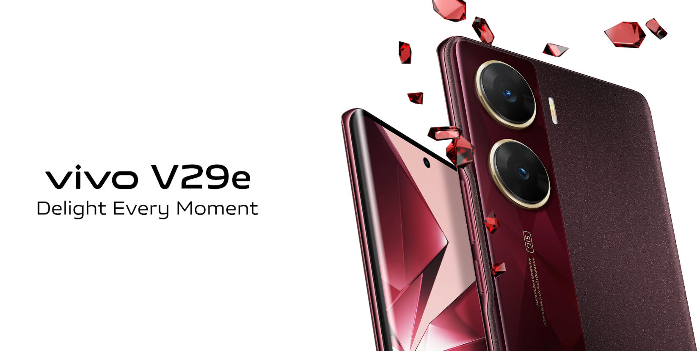

Vivo V29e mobile was launched on 28th August 2023. The phone comes with a 120 Hz refresh rate 6.78-inch touchscreen display offering a resolution of 2400x1080 pixels (FHD+). Vivo V29e is powered by an octa-core Qualcomm Snapdragon 695 processor. It comes with 8GB of RAM. The Vivo V29e runs Android 13 and is powered by a 5000mAh non-removable battery. The Vivo V29e supports 44W Flash Charge fast charging. As far as the cameras are concerned, the Vivo V29e on the rear packs a dual camera setup featuring a 64-megapixel primary camera, and an 8-megapixel camera. It sports a 50-megapixel camera on the front for selfies. The Vivo V29e runs Funtouch OS 13 is based on Android 13 and packs 128GB, 256GB of inbuilt storage. The Vivo V29e is a dual-SIM mobile that accepts Nano-SIMmobile. The Vivo V29e measures 164.42 x 74.92 x 7.57mm (height x width x thickness) and weighs 180.50 grams. It was launched in Artistic Red and Artistic Blue colours. It bears a glass body. Connectivity options on the Vivo V29e include Wi-Fi 802.11 a/b/g/n/ac, GPS, Bluetooth v5.10, USB Type-C, 4G (with support for Band 40 used by some LTE networks in India) , and 5G with active 4G on both SIM cards. Sensors on the phone include accelerometer, ambient light sensor, gyroscope, proximity sensor, and compass/ magnetometer.
The Vivo V29e features a 6.78-inch AMOLED panel that offers Full HD+ resolution, a 120Hz refresh rate, and an in-display fingerprint scanner. It has a 50-megapixel camera with eye-autofocus support on the front. The back panel of the device has an OIS-enabled 64-megapixel primary camera and an 8-megapixel ultra-wide lens. The V29e improves portrait photography with a 2X mode, allowing users to capture DSLR-quality portraits. The V29e runs on Android 13 and FunTouch OS 13 and is powered by the Snapdragon 695 chipset. The phone ships with 8GB of LPDDR4x RAM and 128GB / 256GB of UFS 2.2 storage. It comes with 44W fast charging support for its 5,000mAh battery. Lastly, the device measures 164.4 x 74.9 x 7.6mm and weighs 181 grams.
